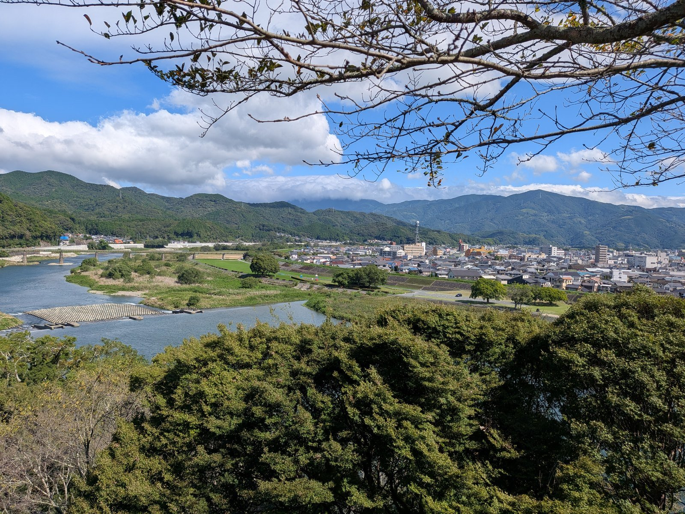

大洲のいま ・ 出典: 大洲市役所 ・ 約9分で読める
観光の資料には空飛ぶクルマ、議会には97集落のヘリポート。大洲の空の話は場所で違った

 メモう
メモう
観光の資料には空飛ぶクルマ。でも議会の記録には、一度も出てこんのよ。
議会で話されとったのは、97の集落のためのヘリポートだった。
調べたら、どっちも同じヘリの取組みの話だったんよ。
3行でいうと調べた資料 18本
- 観光の戦略会議の資料には「空飛ぶクルマの実証実験」。市議会の会議録には、18年分探しても一度も出てこない
- 議会で語られてきた空は、孤立するおそれのある97集落へのヘリポートと、災害のときの民間ヘリだった
- 市の資料では、2つは「観光（平時）と防災（有事）」の1つの取組み。語る場所によって見える顔が違った
令和8年1月30日に開かれた大洲市観光まちづくり戦略会議の資料を読んでいて、手が止まった。
「二次交通対策」の実績の欄に、こう書かれていた。
空飛ぶクルマの実証実験（R7.11）
ヘリパッドの整備（R8.2：実証実験予定 R8.4-受入開始予定）
大洲市観光まちづくり戦略会議 第13回会議資料
同じ欄の「内容」には、「多様な交通手段の確保のため、空飛ぶクルマや民間ヘリの導入」とある。並んでいるもう1つの実績は、伊予大洲駅前のトヨタレンタカー1台。観光客の足の話として、空が出てくる。
ところが、同じ言葉を市議会の会議録で探すと、一度も出てこない。議会で語られてきた空は、まったく別の顔をしていた。
調べていくと、2つは別々の話ではなかった。同じ民間ヘリの取組みが、観光の場では観光客の足として、議会では孤立する集落を助ける手段として語られていた。 語る場所によって、見えている顔が違ったのである。
観光の場で語られた空
2025年11月3日、肱北緑地多目的グラウンドで、愛媛県と大洲市が空飛ぶクルマの実証飛行を行った。大洲まつりの「おまつり村」の会場の横である。機体は中国EHang社のEH216-S。飛行は株式会社AirXに委託され、離着陸場から垂直に上がって、川の上を人を乗せずに飛んだ。
予定していた飛行は3回だった。10時15分、12時30分、14時30分。前日、県は「雨の影響により離着陸場所の強度が十分ではない」として、飛行の中止を知らせている。当日になって、現地の状況に「一定程度改善が見られた」として、3回目の14時30分からの飛行を目指すと追記した。午前の2回は中止になり、機体が飛んだのは午後だった。
AirXが後日の勉強会で見せた資料には、水の溜まったグラウンドで作業する人の写真と、おまつり村の人だかりの向こうを機体が飛ぶ写真が並んでいる。人だかりには子どもの姿も多い。愛媛新聞は、その日の記事の見出しを「『空飛ぶクルマ』に市民らワクワク」とした。
2026年2月13日、その結果を報告する県の勉強会が、大洲イノベーションセンターで開かれた。大洲市の観光まちづくり課が発表した資料の題は「空飛ぶクルマによる観光集客力と防災力向上」。観光の構想が、具体的に並んでいる。
市の資料にある「空飛ぶクルマがつくる新しい観光体験」
- キャッスルステイへの空路アクセス
- 空中さくら回廊
- 龍馬脱藩ルート
- 佐田岬観光と空の駅構想
実績として載っているのは、ヘリコプターを使ったモニターツアー「ZENtour」である。資料の説明は「仁和寺・松山空港・大洲市をヘリで結ぶ富裕層向けモニターツアー」。松山空港から大洲市内へヘリで移り、NIPPONIA HOTELに泊まり、大洲城のナイトツアー、臥龍山荘の貸切、肱川の遊覧朝食と続く。参加した外国人からは、移動時間の短縮と「特別な視点からの観光」が高く評価されたという。
ただ、同じ資料は防災にも同じだけの紙幅を割いている。「災害時の命を守る空のインフラ」として、物資・人員の空輸、医師派遣・緊急搬送、孤立集落・離島の支援。資料の目的の欄には、「移動の自由」によるインバウンド需要の取り込みと、「孤立集落ゼロ」の防災体制構築が、1つの文の中に並んでいた。
議会の会議録には、18年間一度も出てこない
大洲市は、平成20年3月から令和8年6月までの定例会の会議録を、すべてホームページで公開している。定例会74回、本会議307日ぶんである。その全文を「空飛ぶクルマ」「空飛ぶ」「eVTOL」「エアモビリティ」で探した。
1件も出てこなかった。 飛行を委託された会社の名前（AirX）でも、「空の移動」でも出てこない。実証飛行のあとの定例会は、令和7年12月、令和8年3月、令和8年6月の3回ある。観光の資料が「受入開始予定」と書いた4月を過ぎても、同じだった。
「二次交通」という言葉なら、議会にも出てくる。令和8年6月の定例会で、議員が観光客の二次交通に触れている。ただ、それは空の話ではなかった。「現在、大洲市内では２社５台のタクシーが稼働している状況まで減少していると伺っております」。市は、タクシー事業者が2社になったことを認め、ライドシェアの導入の可能性について「具体的な検討に着手してまいります」と答えた（タクシーの話は大洲のタクシー会社は2社になった。ライドシェアは救いになるのかに書いた）。
観光の資料の二次交通は、空飛ぶクルマと民間ヘリだった。議会の二次交通は、減っていくタクシーだった。
議会で語られてきた空は、97集落のためのもの
では、大洲の議会で空はどう語られてきたのか。調べると、まったく別の文脈で、かなり具体的に語られていた。
始まりは平成30年9月の定例会である。7月の豪雨のあとに出された補正予算の説明で、市長は「土砂崩れや大雪等により孤立集落となるおそれが大きい地域」に、災害時の救命活動ができるよう、上須戒の明玄ふれあい広場と戒川ふれあい広場の2か所へ、県の補助を得てヘリポートを整備すると説明した。
令和6年6月の定例会では、山間部に常設のヘリポートを作れないかという議員の質問に、副市長が答えている。市内のドクターヘリの離着陸場は12か所。ヘリの離着陸には縦横35メートル以上の広さが要り、周りに高い木や建物が無いことが条件になるので、山間部に新しく離着陸場を作るのは「大変厳しい」。そのうえで、災害時の民間ヘリの活用のために、一般財団法人国際災害対策支援機構と包括連携協定を結んでいて、民間ヘリの飛行ルートや離着陸場の検討と実証実験を始める、と。同じ年の9月には市長が、8月に民間ヘリが実際に降りられるかどうか、市内各地を回って確かめたと報告している。
令和7年12月の定例会では、市長が数字を出した。大洲市には、災害のときに孤立する可能性のある集落が97ある。対策として「陸路が使用できない状況に備え空からの支援や通信手段を確保しておくこと」が重要だとした。そのうえで挙げたのが、平成30年度の上須戒地区と戒川地区、令和2年度の今坊地区へのヘリポート整備と、令和5年8月に結んだ先の協定である。令和8年2月には、民間ヘリを使った人員・物資の搬送訓練を行う予定だとした（97集落の中身と訓練の様子は民間ヘリで孤立集落へ。南海トラフ想定の防災訓練に書いた）。同じ12月の定例会には、スマート農業の例としてドローンによる農薬散布も出てくる。
大洲の議会で語られてきた空は、観光客を運ぶ空ではなかった。孤立した集落へ物資を運ぶ空と、田畑に薬をまく空だった。
念のため、18年分の会議録で「ヘリ」が出てくる箇所を、観光の言葉（観光・遊覧・ツアー・インバウンドなど）の近くに限って全部拾った。出てきたのは、島の急病人を運ぶドクターヘリの質問と、平成30年のヘリポートの予算の説明だけだった。大洲の議会で、ヘリが観光の話として出てきたことは一度もない。
同じ取組みの、表と裏だった
ここまでを並べると、こうなる。
| 観光の資料・県の勉強会 | 市議会の本会議 | |
|---|---|---|
| 空飛ぶクルマ | 実証飛行を実績として報告 | 18年間で0回 |
| 民間ヘリ | 観光客の足（二次交通） | 孤立する集落を助ける手段 |
| 降りる場所 | ヘリパッドの整備 | 上須戒・戒川・今坊のヘリポート |
| 二次交通 | 空飛ぶクルマ・民間ヘリ・レンタカー1台 | 減っていくタクシー（事業者は2社） |
別々の話に見える。だが、2つがつながっていることは、市自身の資料に書いてある。
2月13日の市の資料の4枚目は「大洲市の『空』への挑戦：観光と防災の課題解決」という題で、取組みの欄は「R5年度：ヘリコプター活用の協定締結・実証開始」から始まる。続く5枚目の実績には、「仁和寺連携ツアーに向けた運航実証」と、中学生の野球部42名などの体験搭乗が並ぶ。16枚目の題は「防災活用ビジョン」で、その下に「観光（平時）と防災（有事）」と書かれている。さらにその下に、令和8年2月の訓練計画がある。2月16日が物資・人員の搬送訓練、17日が「実証実験および地上訓練」だった。
この2日間は、実際に行われた。協定の相手である国際災害対策支援機構の発表によると、2日間は「愛媛県大洲市と一般財団法人国際災害対策支援機構との協定に基づき」行われた。16日は北只の森林公園を孤立集落に見立てた搬送訓練。17日は、参加者がヘリに乗り、上空からの遊覧中に観光案内のアナウンスを聞く実証だった。議会で「災害時に民間ヘリコプターを活用するため」と説明された協定が、訓練の翌日には観光に使われている。 平時は観光に、有事は防災に、同じ仕組みを使う考え方である。
観光の資料にあった「ヘリパッドの整備（R8.2：実証実験予定）」も、時期と言葉から見て、この2日間のことだと読むのが自然だ。以前この記事では、戦略会議のヘリパッドと防災のヘリポートを「結びつけずに書いておく」としていた。市の資料を読むかぎり、市は初めから、観光と防災を1つの取組みとして進めていた。
では、議会は観光の顔を知らないのか。そうではない。戦略会議の委員名簿には、市議会の産業建設委員会の委員長が入っている。市の資料によると、令和6年10月の体験搭乗と意見交換会には、市長や商工会議所、自治会などとともに議長も参加した（24名）。2月の訓練の参加団体の一覧にも「大洲市議会」がある。
知られていない話ではない。それでも、本会議の言葉にはならなかった。本会議でヘリが出てくるのは、市が予算を説明するときと、議員が防災や救急の心配を持ち込んで尋ねたときだった。どちらの入口から入っても、ヘリは防災と救急の顔でしか出てこない。
これは、隠されているという話ではないと思う。 同じ取組みでも、観光の場では観光の言葉で、議会では防災の言葉で語られる。場所が変わると、同じ空の話が別の話に見える。 1つの場所の記録だけを読んでいると、半分しか見えない。
1回きりで終わっても
観光の資料にあった「R8.4-受入開始予定」は、何を受け入れるのかが書かれていない。2026年4月を過ぎて何かが始まったという発表は、9月の時点で見つけられなかった。県の「空の移動革命」のページは2026年3月4日の更新が最後で、令和8年6月の定例会の会議録には、ヘリの話そのものが出てこない。
国の見通しも、まだ先だ。経済産業省と国土交通省は2026年3月にロードマップを改め、空飛ぶクルマの商用運航の開始時期を2027年から2028年と明記した。愛媛県は「2027年以降のサービス開始を目指します」としている。
市の2月の資料は、実装までの段を5つ並べている。
市の資料にある「実装に向けたステップ」
- バーティポート（離着陸場）の候補地の選定
- 飛行ルートの安全性・騒音調査
- モニターツアーの実施
- 災害時運用プロトコルの策定
- 地域住民への説明と受容性向上
2025年10月の県内市町向けの勉強会の資料では、候補地の例に長浜埋立地を挙げていた（埋立地のいきさつは長浜港の埋立、実は50年がかりの計画だったに書いた）。資料の最後の一文は「検討を進めたいと思います」。空飛ぶクルマは、まだ検討の段にいる。
だから、大洲の空飛ぶクルマは、2025年11月3日の1回きりで終わるのかもしれない。
それも、大事なことなのかもしれないと思う。あの日、肱川の上を飛ぶ機体を見上げた子どもや大洲の人の中に、何かが変わった人がいるかもしれない。市の資料は、中学生のヘリの体験搭乗を「次世代教育」と呼び、「郷土愛と航空分野への関心を育成」と書いていた。11月3日の1回も、見上げた人にとっては同じだったのかもしれない。
何でも、やってみたら続けなければいけない、というものでもない。1回やってみて、それで終わる。それも1つの形だと思う。
出典・参考にした資料
大洲市観光まちづくり戦略会議 第13回会議資料（令和7年度中間報告ほか）／大洲市観光まちづくり課(令和8年1月30日の会議の資料。Wayback Machineが2026年2月6日に取得した版で、二次交通対策の欄と委員名簿を確認) 「空の移動革命」実現に向けて／愛媛県 交通政策室(2026年3月4日更新。11月3日の1・2回目の飛行中止の追記と、令和8年2月13日の勉強会の記録。2026年9月23日確認) 大洲市における空飛ぶクルマ実証飛行について（プレスリリース）／愛媛県地域政策課交通政策室・大洲市観光まちづくり課(令和7年10月27日発表。機体EH216-S、委託先AirX、予定していた3回の飛行時刻) 【チラシ】大洲市における空飛ぶクルマ実証飛行について（1・2回目飛行中止）／愛媛県・大洲市(令和7年11月3日の追記版。主催・委託先・協力の団体名) 講演資料「愛媛県における空飛ぶクルマに関するこれまでの取組みについて」／愛媛県交通政策室(令和8年2月13日の勉強会で発表。実証飛行は大洲市と共同、離着陸場で垂直に上昇し河川上を無人で飛行) 講演資料「空飛ぶクルマによる観光集客力と防災力向上 ～大洲市の取り組み～」／大洲市観光まちづくり課(令和8年2月13日の勉強会で発表。観光と防災の構想、ヘリコプター活用事業の実績、2月の訓練計画、実装に向けたステップ) 講演資料「社会実装フェーズに入った空飛ぶクルマ」／株式会社AirX(令和8年2月13日の勉強会で発表。大洲での実証飛行の当日の写真) 説明資料（大洲市）／愛媛県 県内市町向けオンライン勉強会(令和7年10月7日発表。バーティポートの候補地の例に長浜埋立地) 愛媛県大洲市にて民間ヘリコプターを活用した防災訓練および観光実証を実施／一般財団法人国際災害対策支援機構（PR TIMES）(2026年2月23日発表。2月16日の搬送訓練と17日の観光実証、協定に基づく実施、参加団体の一覧) 「空飛ぶクルマ」に市民らワクワク 大洲で県など実証飛行／愛媛新聞ONLINE(2025年11月3日掲載。本文の大半は有料会員向け) 経産省と国交省、「空飛ぶクルマ」ロードマップ改訂。2028年までの商用運航開始目指す／Sustainable Japan(2026年3月29日掲載) 大洲市議会 平成20年3月定例会 会議録（1日目）(公開されている会議録のいちばん古いもの。ここから令和8年6月まで、定例会74回・本会議307日ぶんを全文検索した) 大洲市議会 平成30年9月定例会 会議録（1日目）(上須戒の明玄ふれあい広場と戒川ふれあい広場に、県の補助を得てヘリポートを整備するという補正予算の説明) 大洲市議会 令和6年6月定例会 会議録（3日目）(ドクターヘリの離着陸場12か所、縦横35メートル以上の条件、国際災害対策支援機構との包括連携協定) 大洲市議会 令和6年9月定例会 会議録（2日目）(8月に民間ヘリの離着陸ができるか市内各地で現地確認をしたという答弁) 大洲市議会 令和7年12月定例会 会議録（3日目）(孤立する可能性のある集落97、3地区のヘリポート、2月の搬送訓練の予告) 大洲市議会 令和7年12月定例会 会議録（4日目）(スマート農業推進モデル事業とドローンによる農薬散布) 大洲市議会 令和8年6月定例会 会議録（2日目）(タクシー不足とライドシェアについての質問と答弁。全5日分に空飛ぶクルマとヘリの話が無いことも確認)この記事をサイトに掲載した日: 2026/07/29